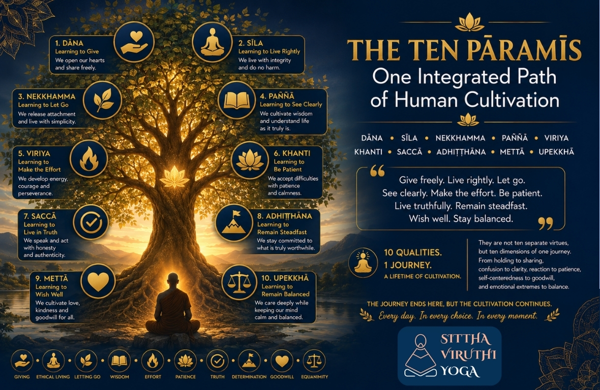

The Ten Pāramīs: One Integrated Path of Human Cultivation

The Journey Comes Together
For the past ten weeks, we have travelled through the Ten Pāramīs. Each week, we explored one Pāramī in detail.
We began with Dāna. Then came Sīla. Nekkhamma. Paññā. Viriya. Khanti. Saccā. Adhiṭṭhāna. Mettā. And finally, Upekkhā.
At first, they may appear to be ten different qualities. One is about giving. Another is about ethical living. Another about letting go. Another about wisdom. Another about effort. Another about patience. Another about truth. Another about determination. Another about goodwill. And another about balance. But as we have travelled through them, something deeper has begun to emerge. These are not ten separate qualities. They are ten dimensions of one journey of human cultivation. The purpose of this final article is to see that whole journey together.
A Simple Story
Imagine a young woman named Maya. Maya wanted to become a better human being. She began by noticing something uncomfortable about herself. She found it difficult to share. She was often concerned about what she might lose. So she began practising Dāna. At first, she gave away things she no longer needed. Gradually, she learned to share her time, attention, knowledge, and opportunities. Something changed within her. She became less possessive.
Then she began noticing something else. Sometimes her words hurt people. Sometimes she acted out of anger or impatience. So she began paying closer attention to her Sīla—her thoughts, words, and actions. She learned that living rightly was not merely about following rules. It was about not creating unnecessary suffering for herself or others.
Then she noticed another pattern. She was becoming attached to recognition. She wanted people to appreciate her. She wanted certain things to happen in a particular way. This led her towards Nekkhamma. She began learning how to use things without being possessed by them. She could enjoy something without needing it to define her.
Then she began asking deeper questions. Why do I behave this way? Why do I become angry? Why do I fear losing things? Why do I need approval? This brought Paññā into her life. She began to see herself and life more clearly. But seeing clearly was not enough. Old habits returned. She needed the energy to continue. That was Viriya.
Then came difficult situations. People misunderstood her. Things did not happen as she expected. She became frustrated. She learned Khanti. She discovered that patience was not passive waiting. It was the ability to remain present without immediately reacting.
Then came a difficult moment. She discovered that she had been telling herself stories that were not true. She had to acknowledge what was actually happening. That was Saccā. Truth became more important than protecting her self-image.
But seeing the truth and understanding what mattered was not enough. She had to remain committed. That was Adhiṭṭhāna. She learned that determination did not mean stubbornly following one method. It meant remaining faithful to what was truly worthwhile while being willing to change the path.
Then something else began to happen. Her growth was no longer only about herself. She began noticing the struggles of others. She became less judgmental. She wanted people around her to be well. That was Mettā.
And finally, she discovered that even goodwill could become emotionally exhausting if she tried to control every outcome. She learned to care deeply without losing inner balance. That was Upekkhā.
Maya had not collected ten virtues. She had gradually become a different kind of human being.
Seeing the Ten Pāramīs as One Journey
Let us look at the journey again.
1. Dāna — Learning to Give
Dāna begins to loosen the grip of "mine." We discover that life is not only about acquiring and keeping. We can share. We can contribute. We can give without always asking what we will receive in return. Dāna opens the hand.
2. Sīla — Learning to Live Without Causing Unnecessary Harm
Once the hand begins to open, the way we live also becomes important. Sīla asks: "Do my thoughts, words, and actions create unnecessary suffering?" It brings responsibility into our relationships with ourselves and others. Sīla gives direction to our actions.
3. Nekkhamma — Learning to Let Go
As we live more carefully, we begin noticing our attachments. We may discover that we are not merely using things. Sometimes things begin to possess us. Nekkhamma teaches us the freedom of letting go. We can enjoy something without becoming dependent upon it. We can love someone without trying to possess them. Nekkhamma creates inner space.
4. Paññā — Learning to See Clearly
When the mind has more space, we can begin to see. Why do I think this way? Why do I react this way? What is actually happening? What am I adding to the situation through my own conditioning? Paññā is not merely having information. It is seeing things more clearly as they are. Paññā gives vision.
5. Viriya — Learning to Move
Seeing clearly does not automatically change our lives. We need energy. We need willingness to act. We need to begin again when we fail. That is Viriya. Viriya turns understanding into movement.
6. Khanti — Learning to Stay
Once we begin moving, difficulties inevitably arise. Change takes time. People may not respond as we expect. Our own habits may return. Khanti teaches us not to react immediately. It gives us the capacity to remain with difficulty without being overwhelmed by it. Khanti gives stability to our journey.
7. Saccā — Learning to Live in Truth
As we become more patient, we may begin seeing things we previously avoided. We may discover uncomfortable truths about ourselves. We may notice our fears, motives, attachments, and self-deceptions. Saccā asks us not to run away from what we see. Truth becomes more important than protecting an image of ourselves. Saccā gives authenticity to our journey.
8. Adhiṭṭhāna — Learning to Remain Steadfast
Seeing the truth is not enough. We must remain committed to what is truly worthwhile. But this does not mean becoming rigid. Like the river that flows around a rock without forgetting the ocean, we learn to change our methods without abandoning our purpose. Adhiṭṭhāna gives direction and continuity to our journey.
9. Mettā — Learning to Wish Well
At this point, something important changes. Our growth is no longer only about ourselves. We begin to ask: "Does my growth make life better for others?" Mettā opens the heart. We begin to wish for the well-being of others without demanding anything in return. Our inner development becomes a source of goodwill.
10. Upekkhā — Learning to Remain Balanced
But life will never completely follow our wishes. People will change. Circumstances will change. We will experience gain and loss, praise and criticism, success and failure. Upekkhā teaches us to remain inwardly balanced. We continue to care. We continue to love. We continue to act. But we do not try to control every outcome. Upekkhā brings balance to the whole journey.
The Ten Are Interconnected
Now something becomes clear. Can there be Mettā without Sīla? If we genuinely wish others well, we naturally become concerned about not harming them. Can there be Upekkhā without Paññā? Without seeing clearly, balance can easily become indifference. Can there be Adhiṭṭhāna without Paññā? Determination without understanding can become stubbornness. Can there be Viriya without Khanti? Effort without patience can become restlessness. Can there be Dāna without Nekkhamma? Giving may become another way of seeking recognition or control. Can there be Saccā without Paññā? Seeing truth requires the ability to observe clearly. Each Pāramī supports the others. They grow together.
A Tree as an Image of the Whole Journey
Imagine a large tree. We cannot separate the tree into ten independent objects and still call it a living tree. The roots, trunk, branches, leaves, flowers, and fruits all belong to one living system. The Ten Pāramīs are similar. Dāna is like opening the roots to nourishment. Sīla gives structure. Nekkhamma creates space. Paññā gives the ability to see where growth is needed. Viriya supplies energy. Khanti gives stability through changing seasons. Saccā keeps growth authentic. Adhiṭṭhāna keeps the tree rooted through storms. Mettā allows it to offer shade and fruit to others. Upekkhā keeps the whole system balanced through changing conditions. The purpose is not to become excellent in one quality while neglecting the others. The purpose is to become a whole human being.
The Abhidhamma Perspective
The Abhidhamma gives us a remarkably detailed way of understanding the mind. It helps us see that what we casually call "a person" is not one fixed, permanent mental entity. Experience arises through changing mental and physical processes, supported by causes and conditions. Different mental qualities arise under different conditions. Wholesome qualities can support other wholesome qualities. Unwholesome qualities can also strengthen one another. This gives us an important insight. Human transformation does not happen because we simply decide: "From today, I will become a completely different person." Transformation happens through repeatedly cultivating wholesome conditions. A generous act strengthens generosity. A truthful response strengthens truthfulness. Patient observation weakens impulsive reaction. Clear seeing supports wiser choices. Repeated effort strengthens energy. Goodwill weakens ill will. Balanced understanding reduces emotional extremes. In this sense, cultivation is gradual. We are not manufacturing a new self. We are repeatedly creating conditions in which wholesome qualities can arise, strengthen, and become more natural. This is why the Pāramīs can be understood as a path of cultivation.
From Knowing to Living
There is another important lesson in this journey. We can know all ten Pāramīs intellectually and still not live them. We can read about Dāna without becoming generous. We can understand Sīla without changing our behaviour. We can discuss Nekkhamma while remaining deeply attached. We can explain Paññā without seeing our own conditioning. We can admire Viriya without making an effort. We can talk about Khanti while reacting impatiently. We can speak about Saccā while avoiding uncomfortable truths. We can praise Adhiṭṭhāna while remaining stubborn. We can talk about Mettā while carrying resentment. We can describe Upekkhā while becoming indifferent. Therefore, the real question is not: "How much do I know about the Ten Pāramīs?" The deeper question is: "How are these qualities becoming visible in the way I live?" That is where knowledge becomes cultivation.
A Simple Way to Reflect
We can occasionally pause and ask ourselves:
- Dāna: What am I holding that I could share?
- Sīla: Are my thoughts, words, and actions creating unnecessary suffering?
- Nekkhamma: What am I unnecessarily clinging to?
- Paññā: What am I not seeing clearly?
- Viriya: Where do I need to make a sincere effort?
- Khanti: Where do I need patience instead of immediate reaction?
- Saccā: What truth am I avoiding?
- Adhiṭṭhāna: What truly worthwhile purpose do I need to remain committed to?
- Mettā: Does my presence make life better for others?
- Upekkhā: Can I care deeply without trying to control every outcome?
These are not questions to judge ourselves with. They are questions that help us observe our lives.
From Self-Cultivation to Human Flourishing
At the beginning of this series, the journey may have appeared to be about becoming a better individual. But perhaps something deeper has happened. The more we cultivate ourselves, the less isolated the idea of "self-improvement" becomes. Giving reduces possessiveness. Ethical living reduces harm. Letting go reduces dependence. Wisdom reduces confusion. Effort increases our capacity. Patience reduces unnecessary reaction. Truth reduces self-deception. Determination gives direction. Goodwill expands the heart. Equanimity brings balance. The result is not merely a happier individual. It is a human being who can participate in life more wisely. A person who can receive without greed. Give without pride. Act without harming. Love without possessing. Work without being consumed by results. Stand firmly without becoming rigid. Speak truth without cruelty. Care for others without losing oneself. And remain balanced without becoming indifferent. That is a mature human life.
The Journey Never Really Ends
Completing the Ten Pāramīs does not mean reaching a point where we can say: "I have finished." Life itself continues to present opportunities to cultivate them. Someone asks for help. Dāna appears. A difficult choice arises. Sīla appears. An attachment becomes visible. Nekkhamma appears. Confusion arises. Paññā is needed. A task becomes difficult. Viriya is needed. Someone behaves unpleasantly. Khanti is needed. An uncomfortable truth appears. Saccā is needed. Our purpose is tested. Adhiṭṭhāna is needed. Someone suffers. Mettā is needed. The outcome is beyond our control. Upekkhā is needed. The Pāramīs are therefore not merely topics to study. They are qualities that life itself keeps inviting us to cultivate.
The Whole Journey in One Sentence
If we were to express the entire journey in one simple movement, perhaps it would be:
Give freely. Live rightly. Let go. See clearly. Make the effort. Be patient. Live truthfully. Remain steadfast. Wish well. Stay balanced.
And then begin again. Because every day gives us another opportunity to cultivate them.
The Final Understanding
The Ten Pāramīs are not about becoming perfect. They are about becoming more conscious of the way we live. They are not commandments imposed from outside. They are qualities we can observe, understand, and cultivate in our own lives. They do not ask us to escape from ordinary life. They invite us to meet ordinary life differently. A family disagreement becomes an opportunity for Sīla and Khanti. A difficult decision becomes an opportunity for Paññā and Saccā. A failure becomes an opportunity for Viriya and Upekkhā. A relationship becomes an opportunity for Mettā and Nekkhamma. A meaningful purpose becomes an opportunity for Adhiṭṭhāna. Everyday life becomes the field in which cultivation happens. And perhaps that is the deepest message of this entire journey: We do not cultivate the Pāramīs by withdrawing from life. We cultivate them by learning how to meet life more wisely.
Conclusion
We began this series by asking: "What is a Pāramī?" Perhaps now we can answer that question more completely. A Pāramī is not merely a virtue to admire. It is a quality of mind and conduct that is gradually cultivated until it begins to shape the way we see, choose, act, relate, and live. The Ten Pāramīs are therefore not ten destinations. They are ten aspects of one journey. A journey from holding to sharing. From harming to caring. From attachment to freedom. From confusion to clarity. From hesitation to effort. From reaction to patience. From pretending to truth. From wavering to steadfastness. From self-centredness to goodwill. From emotional extremes to balance. And perhaps, ultimately, from simply existing to learning how to live consciously.
The journey of the Ten Pāramīs ends here. But the cultivation does not. It begins again every time life gives us an opportunity to choose wisely. This is not the end of the journey. It is an invitation to live it.